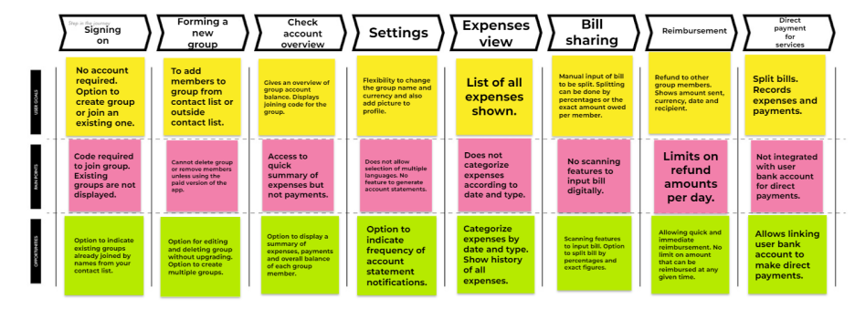

After extensive research into bill sharing apps, we decided to examine two prominent apps, namely, Splitwise and Splid, for a broader perspective on the subject. Splitwise is a top-rated bill sharing app with over 10 million downloads on the Google Play Store. It offers a simple way to share expenses with friends and family. Founded in 2011, Splitwise Inc. aim was to create a free mobile app that helps couples, friends, roommates, and family members organize their shared expenses. Its features include multi-platform support for iOS, Android, and web, calculating group expense totals, simplifying debts into easy repayment plans, and the ability to export to CSV. Along with a well-designed and attractive UI, quick loading time and smooth navigation when perusing the app, Splitwise is a solid app when it comes to sharing expenses (Web Analytics, 2018).
The Splid bill sharing app on other hand has over 1 million downloads on the Google Play Store. Splid helps users stay abreast with all their expenses and settle any debts easily. Launched on May 14, 2016, it is one of the highest rated apps in terms of expense sharing due to its simplicity and ease of use. With features including a simple and clean interface, ability to share groups online, offline accessibility, functionality to download summaries as PDF or Excel files, and over 150 currencies available to select on the app. Splid requires no signups or registration (Irby, 2023).
Unlike Splid, Splitwise requires user sign in account. Even though both apps are free to download and support a free user version, all useful features such as periodic account statements, excel and pdf generated statement charts, and editing groups are behind a paywall and only accessible upon user upgrade.
In our examination, the successful use of any of these apps involves 8 phases of user interaction. This involves the sign-up, group formation, account check overview, settings, expenses view, bill sharing, reimbursement, and payments. Hence, we constructed and analyzed the user journey map according to these phases to understand user goals, pain points and opportunities for further improvement.
After analyzing the market research data and the user journey mindsets, it is observed that although current apps are efficient in their operations, there remains a few concerns that need to be addressed (based on the breakdown of user pain points).
The first pain point encountered in the process of using a bill sharing app is the request by the platform to create a new group or join an existing one. While it may be easy to join an existing group, the list of existing groups on the app is not displayed and users need to have an access code to join any specific group. This proves to be very inconvenient, especially for new users. In view of this, we find that an opportunity exists to connect the app to the contact list which will immediately recommend available groups based on the names of the contacts who belong to those groups. This will allow new users to quickly identify the possible groups to join.
The second pain point relates to group formation if users opt to create a new group. In this phase, although there is no limit on the number of members that can be added to a group from the contact list, the user cannot remove members or delete the entire group unless the user upgrades to the paid version. Because it is intuitive for users to want to update the group from time to time or delete it entirely when the purpose of the bill sharing elapses, we find that there is the opportunity to allow features for editing and deleting on the free version. Additionally, we will allow for the option to create multiple groups which at present is missing in apps.
Thirdly, although the app gives an account overview, this reflects only the net expenses for each member while excluding the payments. Hence, we observe an opportunity to redesign an overview that displays a summary reflecting expenses, payments and the overall balance of each member.
Again, in terms of settings, apart from the functionality for changing the group name, the currency for transaction and attaching a picture to the profile, the is no settings to operate the app in multiple languages. Additionally, there is no settings options to specify the frequency for receiving account statement notifications. We therefore intend to add functionality for language selection so that the app can be used in multiple languages. Also, there will be an option for users to select the frequency for account statement notification reminders.
An additional pain point relates to the expense view which does not categorize the expenses according to date or type. To resolve this, the expense history view will have a filter for categorizing the data according to date or type for easy search and viewing. Furthermore, the filter will allow users to indicate how far back the history view should show expenses.
A significant pain point in terms of the bill sharing feature is that users must manually input the bill into the app before it can be recalculated and split. We find this to be inconvenient for users. Hence, we found the opportunity to add a code scanning feature that allows users to directly scan bills into the app for splitting. The scanning feature should be able to read both bar and QR codes.
In terms of reimbursement, the pain point has to do with daily refund limits. To resolve this, we allow for no limits on refund amounts that can be issued daily. The final and most important pain point is the inability to make direct payments from the app. This is because the app does not allow linking to a bank account. In view of this, our app improvement design will integrate the app with the user’s bank account to allow for direct bill payments from the app.